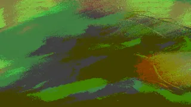
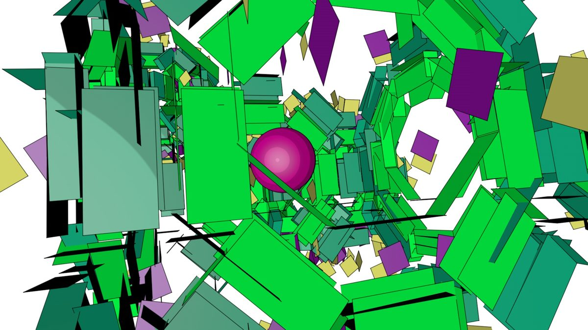
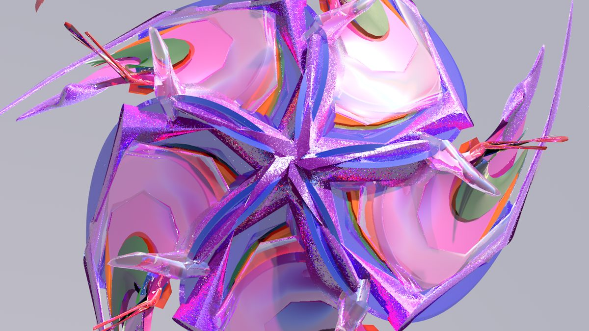
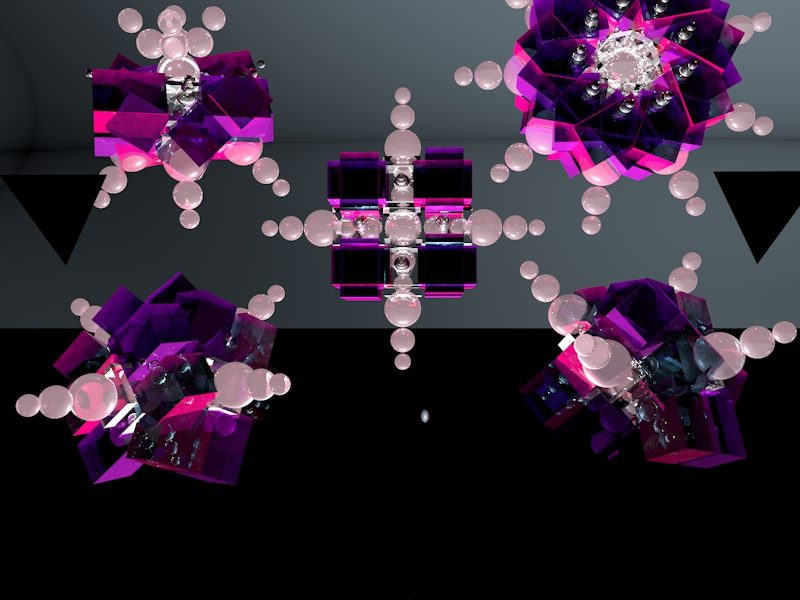
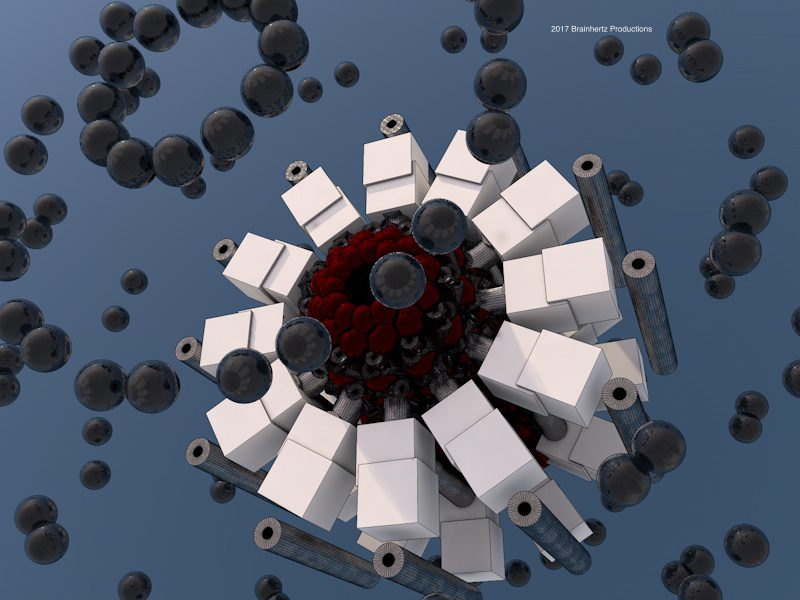
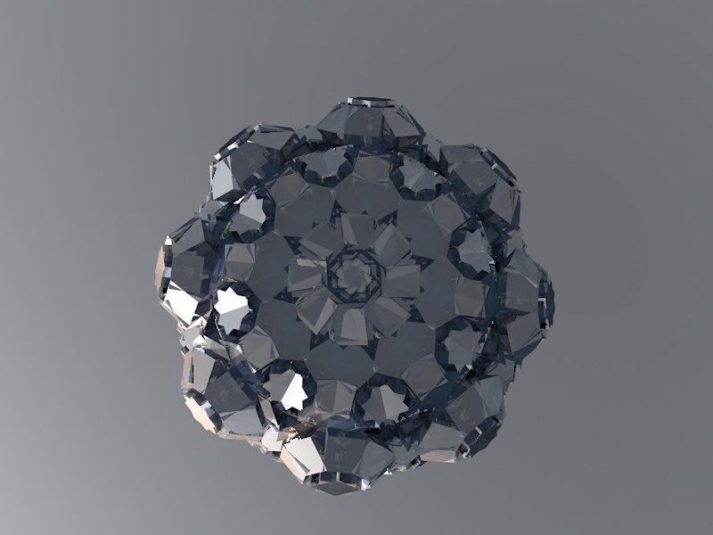
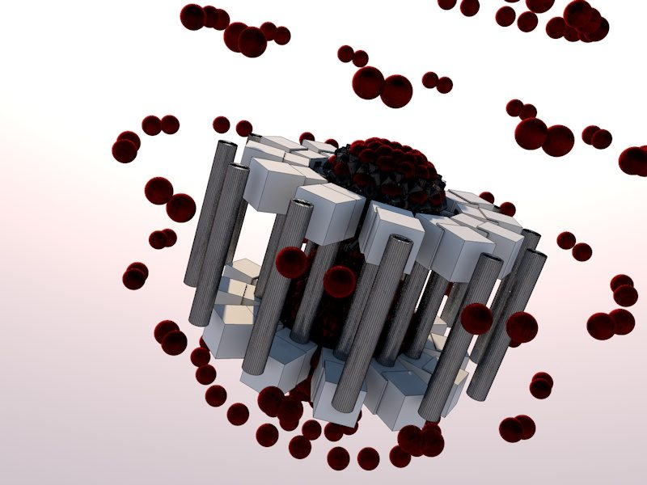
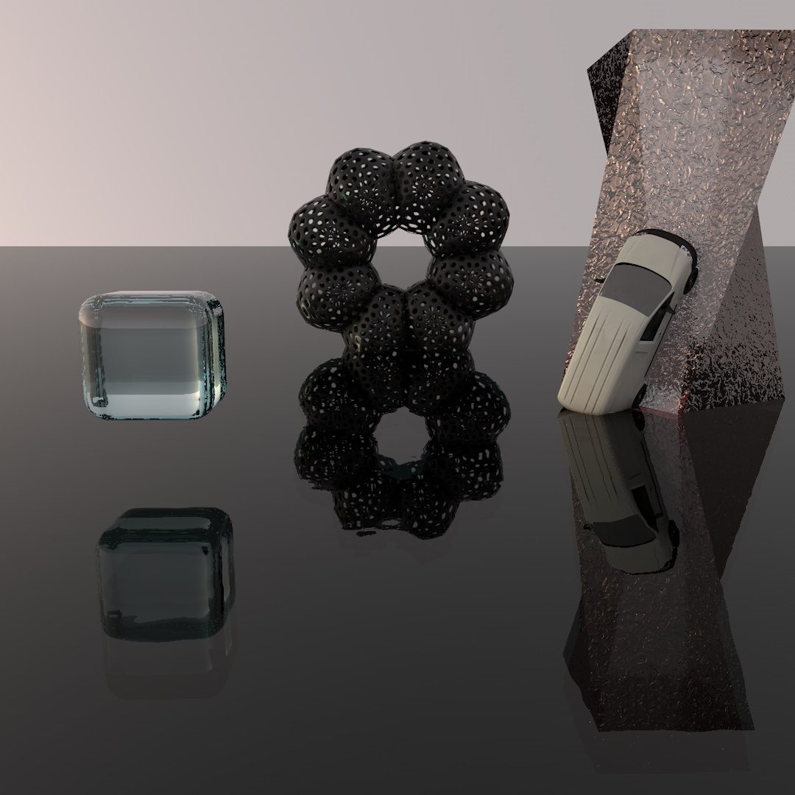
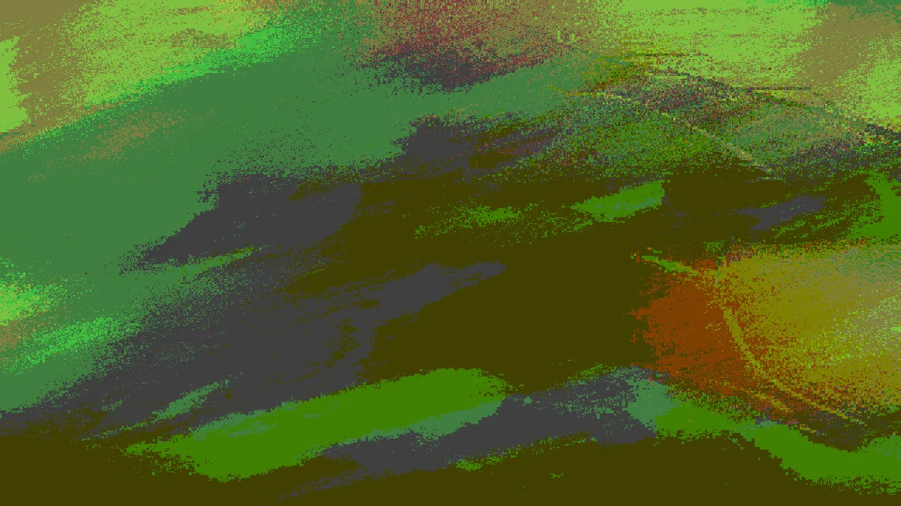

Frontal · direction
Producer & Director
Producer and director, leading productions that draw on every other region here: visuals, sound, projection and light.
- Producer
- Director
- Visual direction
Los Angeles · Since 2016
Producer & director. Visuals, music, projection mapping and lighting design: one production camp, wired together.
Immersive experiences · projection mapping · live sound
Co-Chair, LASIGGRAPHFrontal lobe · identity
Kyle Carlin is a Los Angeles producer and director who has run Brainhertz Productions since 2016: visuals, music, animation, projection mapping, lighting design and live sound, all from one studio.
He loves helping a crew pull a show together, makes music as Tellavi5ion, and gives his MOSH plugin away for free.
Motor cortex · tools

MOSHResolume FFGL · Windows 64-bitReaction-diffusion datamosh effect for Resolume Arena / Avenue 7.0.3 to 7.2.x.Download .zipOccipital lobe · sight



3D animation for other artists in Cinema 4D, composited in After Effects.
Temporal lobe · hearing
Artist · Tellavi5ion
Out now on Brainhertz Productions: Channel One (album, 2025) · Top Notch · Emitna · Times 2wenty · Hella · Ichannel2
Artist page: every platform + music video
Live sound
Parietal lobe · space
Cerebellum · timing
Tellavi5ion: a generative music and visual system for real-time performance, combining generative music, real-time visuals and immersive lighting.
Hippocampus · memory




Render stills from the 2017 archive, plus selected live and event credits.
Brainstem · output
Frontal lobe · About
Kyle Carlin is a producer and director in Los Angeles. Since 2016 he has run Brainhertz Productions, a small production camp where visuals, music, animation, projection mapping and lighting design all come out of the same studio.
A lot of Kyle's work happens around live shows. He has done live sound for many artists in the industry and sets up full sound systems, and he is at his best helping a crew pull a show together: mapping projections, running visuals, dialing in the lights. Along the way he has worked on an early fully immersive experience and on VR tech for a major tour in Los Angeles.
He also makes his own music as Tellavi5ion, which doubles as a live system that brings generative music, real-time visuals and immersive lighting together on stage.
Kyle is Co-Chair of LASIGGRAPH, the Los Angeles chapter of ACM SIGGRAPH. He likes sharing what he builds: MOSH, his datamosh plugin for Resolume, is a free download. If you are working on something and want to talk shop, he is always glad to hear from you: send a signal.
Frontal · direction
Producer and director, leading productions that draw on every other region here: visuals, sound, projection and light.
Occipital lobe · Visuals
Occipital · sight
3D animation designed for other artists in Cinema 4D, composited in After Effects. Visual direction and motion work built around each artist's needs.
Temporal lobe · Music & Sound
Player by Spotify. Loads when you open this page.
Temporal · hearing
Music composition and sound design in Ableton Live, from a background in bands, recording and live performance.
Has done live sound for many artists in the industry, and sets up full sound systems.
Out now as Tellavi5ion: ICHANNEL2 (single, Sep 24, 2026) and the album Channel One. Artist page & streaming
Tellavi5ion releases, streaming links, the full player and the music video live on the Artist page.
Temporal lobe · Artist
Kyle Carlin's artist project, released on Brainhertz Productions. Listed as TellaVi5ion on streaming services.
0:005:59
Press play and go back to the map: the brain listens. Bass feeds the reaction-diffusion field, kicks fire flares, the neuron lines glow with the level. The track keeps playing as you move around the site. The audio couldn't load in this browser.
Tellavi5ion is the music of Los Angeles producer and director Kyle Carlin, who leads Brainhertz Productions. The debut album Channel One arrived on November 22, 2025, followed by the singles Top Notch, Emitna, Times 2wenty, Hella and Ichannel2.
Tellavi5ion is also a live performance system that brings generative music, real-time visuals and immersive lighting together on stage.
Music video · visual design
Music video, visuals designed by Kyle Carlin / Brainhertz. Published on the Link Up TV YouTube channel · Watch on YouTube ↗
Parietal lobe · Live
Parietal · space
Live shows run through Resolume, projection mapping with Resolume and TouchDesigner, stage setup and art installations.
Parietal · light
Lighting design as part of the live toolkit, planned alongside projection mapping and real-time visuals.
Cerebellum · Real-time Lab
Cerebellum · timing
Real-time and generative systems. The current project, Tellavi5ion, is a generative music and visual system for performance that combines generative music, real-time visuals and immersive lighting. Collaborators working in Ableton and Unreal are welcome.
Working in Ableton or Unreal and want to collaborate? Send a signal.
Hippocampus · Work
3D render stills from the Brainhertz archive (2017), plus music video design.

Immersive · VR
Immersive & VR: worked on an early fully immersive experience, and on VR tech for a major tour in Los Angeles.
Oct 7, 2017 · Fais Do Do, Los Angeles
NEXT LEVEL: One Love Pre-Party: downstairs projections and live visuals at a VR/AR music event.
Event listing ↗Nov 4, 2017 · Purple 33, Marina del Rey
NEXT LEVEL: Scorpio Rising: live visuals.
Event listing ↗Live event
Noodlefest: audio visuals.
2026 · In development
Tellavi5ion: a generative music and visual system for performance, combining generative music, real-time visuals and immersive lighting.
Nov 22, 2025 · Brainhertz Productions
Channel One: debut Tellavi5ion album, 10 tracks, followed by the singles Top Notch, Emitna, Times 2wenty, Hella and Ichannel2 (2025–2026).
Artist page & streaming links ↓Music video · visual design
Jumanji ft Westside Boogie & C4: Energy Remix: music video with visuals designed by Kyle Carlin / Brainhertz, published on the Link Up TV channel.
Watch on YouTube ↗Motor cortex · Plugins
Brainhertz plugins, devices, components and presets. First release: MOSH for Resolume.

A reaction-diffusion datamosh effect. A Gray–Scott pattern (coral by default) has the clip stained into the reaction, and the finished datamosh is mixed dry/wet over your footage.
| Parameter | Range | Default |
|---|---|---|
| Feed | 0.010–0.090 | 0.0545 |
| Kill | 0.040–0.075 | 0.062 |
| Rate | 1–16 | 8 |
| Size | 0.70–1.80 | 1.00 |
| Vectors | 0–4 | 1.40 |
| Blocks | 4–64 | 12 |
| Hold | 1–90 | 16 |
| Split | 0–16 | 1 |
| Crush | 0–16 | 0 |
| Stain | 0–100% | 35% |
| Mix | 0–100% | 100% |
| Reseed | button | off |
Feed and Kill set the Gray–Scott pattern. Stain mixes the clip into the reaction. Mix is the dry/wet of the finished datamosh. Reseed's rising edge plants a new field.
MOSH.dll into Documents\Resolume Arena\Extra Effects\ (Avenue: Documents\Resolume Avenue\Extra Effects\). If your install keeps a versioned Documents folder, use that one.Brainstem · Contact
Visuals for a show, a projection-mapping build, animation, music, or a collaboration on Tellavi5ion.